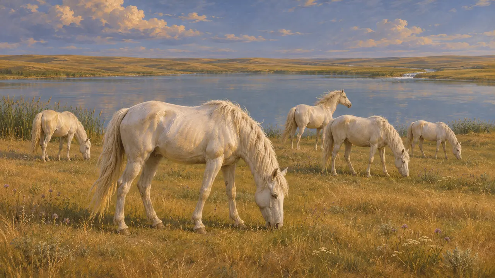
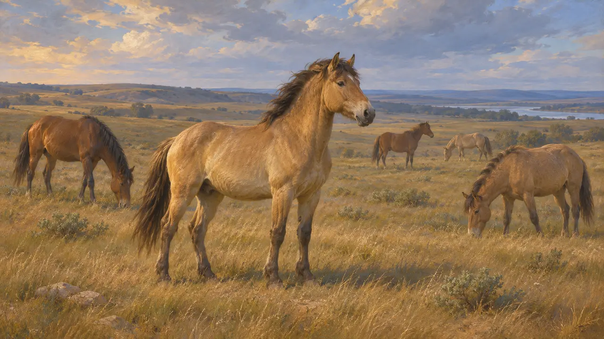
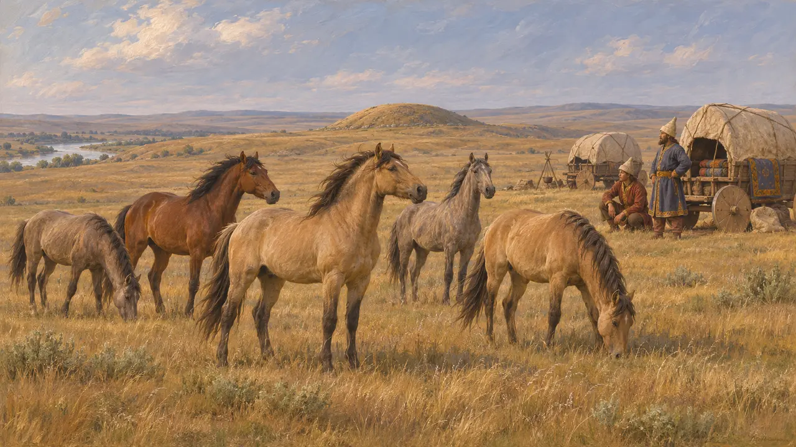
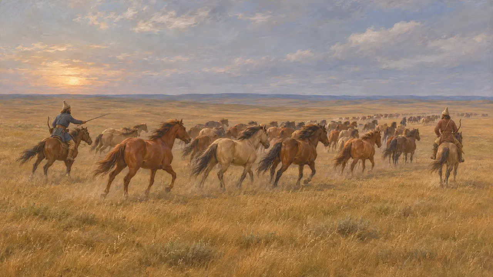
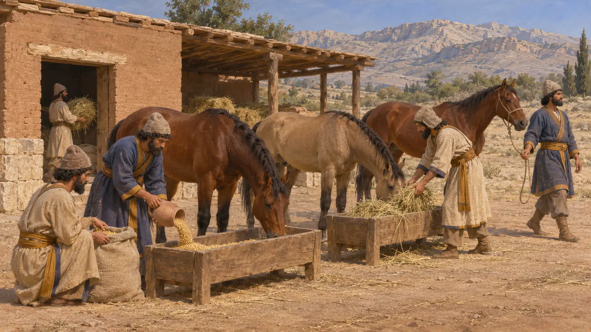
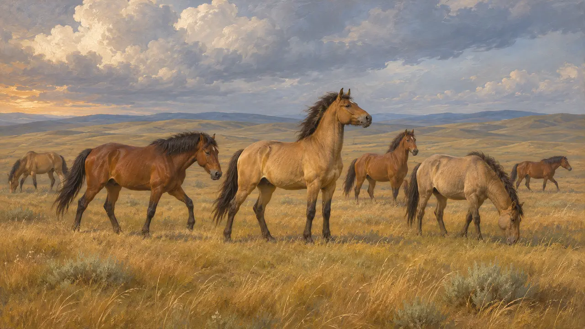

Cavalli selvatici della steppa
Cavalli allo stato brado delle pianure scite a nord dell'Istro, intorno al 513 a.C.
Nel gioco: Livello 6: Il ponte di barche
Erodoto dice che cavalli bianchi selvatici pascolavano accanto al lago da cui nasce il fiume Ipani, nella terra degli Sciti. Gli Sciti erano un popolo di cavalieri, e la marcia di Dario contro di loro, intorno al 513 a.C., portò un esercito persiano in questa prateria, dove non trovò alcuna battaglia da vincere.
Nel gioco: I cavalli selvatici compaiono come scenario nel livello dell'Istro, sulla sponda scita del fiume. Nessuna regola li considera. Erodoto li dice bianchi, ma il gioco schiarisce un mantello sauro, il che è una semplificazione.

Erodoto sui cavalli bianchi
Racconto anticoDescrivendo il fiume Ipani in Scizia, Erodoto dice che cavalli bianchi selvatici pascolavano lungo il lago da cui nasce. L'Ipani si trovava molto a nord-est dell'Istro, e la sua notizia proveniva probabilmente da informatori greci della costa del Mar Nero, anche se qui non li nomina. Non affermò di aver visto di persona quei cavalli.
Herodotus 4.52

Che animali erano probabilmente
ContesoErodoto non dice se i cavalli fossero davvero selvatici o semplicemente un bestiame senza padrone. La ricerca moderna ha mostrato che persino il cavallo di Przewalski, un tempo definito l'ultimo cavallo selvatico, discende da animali rinselvatichiti di antichi ceppi domestici. Il colore da lui riferito non può essere verificato sulla base dei resti sopravvissuti.
P. Briant, From Cyrus to Alexander, 2002

I cavalli e gli Sciti
Racconto anticoErodoto descrive gli Sciti come nomadi che vivevano con le loro mandrie e i loro carri e non avevano città fisse da difendere. Descrive anche cavalli sacrificati e sepolti attorno al re defunto. I tumuli funerari della steppa (kurgan) portati alla luce contengono effettivamente sepolture di cavalli, anche se non confermano ogni dettaglio da lui riferito.
Herodotus 4.71-72

Gli Sciti e l'esercito persiano
Racconto anticoErodoto dice che gli Sciti si ritirarono davanti ai Persiani e portarono via le loro mandrie, cosicché l'esercito aveva poco da attaccare e di cui nutrirsi. Quanto Dario si sia spinto nella steppa è oggetto di discussione, ed Erodoto offre l'unico resoconto dettagliato.
Herodotus 4.120

Cavalli al servizio dei Persiani
Nelle fontiLe tavolette della Fortificazione di Persepoli registrano razioni e foraggio distribuiti ai cavalli e ad altri animali in viaggio per conto del Re nella Perside. Mostrano quanto attentamente lo stato persiano contasse i propri cavalli.
Persepolis Fortification tablets, general

Fonti
- Herodotus 4.52
- Herodotus 4.71-72
- Herodotus 4.120
- Herodotus 7.40
- P. Briant, From Cyrus to Alexander, 2002